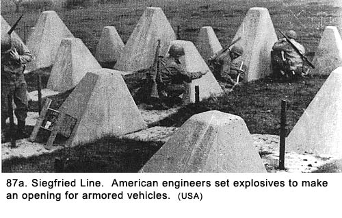
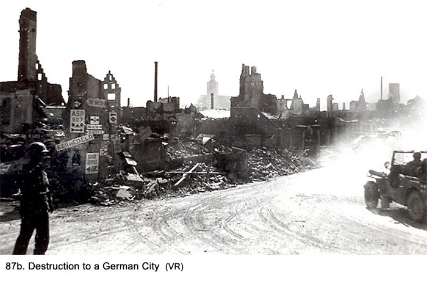
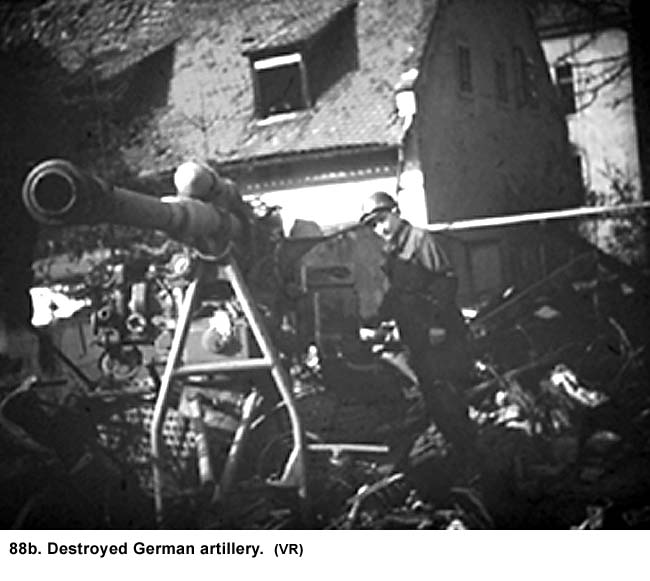
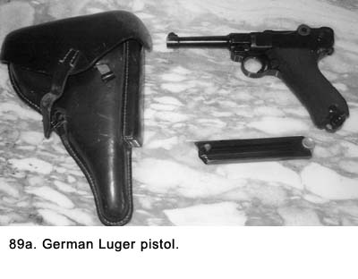
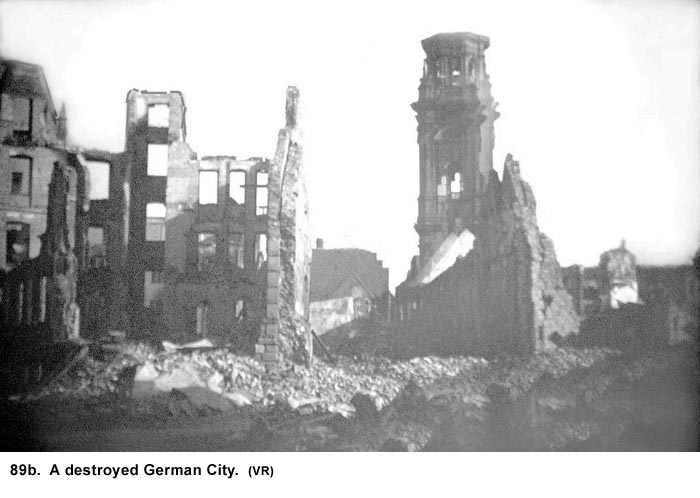

|
Table of Contents < - - - return Chapter 18 < - - - next
World War II Story by Robert F. Gallagher Chapter 17 - Alzey, Germany "When I hear the word
culture, I reach for my revolver". _______________________ Moving Into Germany We headed east into Germany to our next gun emplacement, a trip that took about eight hours. Soon after crossing the Luxembourg - German border, we saw Germany's Siegfried Line; the continuous line of bunkers and defensive fortifications that stretched as far as we could see. It was a sight to be remembered. There were pillboxes and bunkers with dome-shaped tops. The barrels of large guns were sticking out of them, all facing toward Luxemburg. We would later learn these structures were all connected together with underground tunnels. Between the pillboxes were multiple rows of pyramid-shaped slabs of concrete obstacles called dragons' teeth (See Fig. 87a). They projected from the earth and extended in both directions perpendicular to our crossing site.  The whole defensive system was much more impressive than anything we had seen in the newsreels. Its magnitude was awesome, and we were seeing only a small portion of it. The defenses seemed to be relatively intact even though there were multiple craters scattered about caused by either artillery shells or aerial bombs. We commented how ironic it was for the highly-aggressive Germans to build such an elaborate defensive fortress facing a tiny peace-loving country like Luxembourg. When the convoy made a temporary stop, Dillon exited the truck cabin and ran to the back to give us a message. He had seen a sign posted along the road that read, "You are entering enemy territory. Stay alert." We were not apprehensive about the German civilian population, but at the same time we knew there was a big difference in their attitude toward us.
Later, while still in Germany, we heard rumors the Nazi government was setting up sabotage and resistance movement behind the allied army's lines. We saw no sign of this. The civilians we encountered seemed to be unhappy but resigned to their fate. Our weapons gave us great confidence, but we knew it was not the same as traveling in Luxembourg or France, which were allied countries. We knew the people in this enemy territory were not glad to see us. Some towns had a number of white flags hanging from an upper story window to indicate surrender. Usually, they were not really flags but rather a substitute made from a white shirt or part of some bedding. Because they were still in place some time after the local battle had passed through, we took it to mean (right or wrong) that those who lived in those buildings had completely accepted all surrender terms. Usually, there were no other American troops of any magnitude to rely on if something happened, so we would have to handle any problem that arose. We hoped our supposition of complete capitulation by the civilian population was correct. We soon saw many more towns heavily damaged
by warfare. The destruction seemed much worse than anything we had seen in
France (except for Le Havre) or Luxembourg. Again, we asked the question,
"Where are all the people living, and how can those who are left exist
in such ruins?" Some of the civilians we did see were carrying luggage
or pulling little carts with their personal belongings on them. They were
probably the only things they had left to salvage from their destroyed
homes. While buildings could be rebuilt, other personal items were gone
forever. A few of the wanderers had bicycles but they seemed to be using the
bikes to carry supplies, not to ride. Everyone seemed to have the same
troubled look on their faces, but here there was also desperation, or maybe
defeat, in their appearance (See Fig. 87b).  The Germans wan looks were not entirely due to the destructive effects of warfare. Food was extremely hard to get and their meager diet was taking a toll on their health. In addition to those people who were moving along the rubble-strewn streets, others were digging among the destruction that had once been their houses. We asked ourselves, where would those carrying luggage go? One part of their town looks as bad as another and all the towns nearby were basically the same. There were no shops open-or to be more exact-intact, and we saw no open markets. How were they managing to stay alive? Why weren't they dying in the streets? Moving through war-torn Germany was like observing a major catastrophe close up with the grieving and mourning survivors attending a prolonged funeral. Winston Churchill, the Prime Minister of England, said "Germany has been ground to powder." We observed that was only a slight exaggeration. The deplorable sight of destruction and misery was accentuated by the smell of death, sometimes mixed with the scent of strong antiseptic, but the smell of death always prevailed. It usually started as we entered a town, grew stronger in its center, and did not let up until we were some distance past the town limits. It often lingered in the truck long after we had passed into a rural area. We felt it had permeated our clothing and equipment made of fabric. The many dead who could be found had been buried, but there were many more in the ruins who could not be located and who never would be properly buried. We could avert our eyes to avoid the sight of death and destruction, but there was no way to avoid the smell. There were areas along the road and sometimes right in the middle of a city or town where there would be two or more crosses. These were small makeshift cemeteries where the German civilians had buried their dead. There were also military graves, and they usually had a rifle instead of a cross sticking up from a temporary grave as a marker, sometimes, with a helmet sitting on top. They had been hurriedly dug as the German army was retreating. None of the graves were those of American soldiers because they had all been removed. This was enemy country and the people and scenery shouted with defeat. Even the people's clothing added something to the gloominess. There was a complete lack of any bright colors - everything appeared to be black, dark blue, dark gray, brown, or some other shadowy color. Weren't there any clothes made of yellow, orange, or red material left in Germany? Were the people dressing to mourn their downfall and the death all around them? Even the little bit of white we saw seemed to be more drab gray than pure white, including the surrender flags. From the looks of the villages, it was obvious that they had come through some heavy bombing, strafing, or artillery fire, maybe all three. Some towns had been bombed, shelled while the Americans fought their way in, fought over house to house. Then the town was shelled again by the Germans as they tried to drive the Americans back out. There were totally destroyed buildings, partially destroyed ones, and some with their windows all blown out and walls heavily pockmarked from flying projectiles. Many buildings, even the walls of partially destroyed buildings, showed structural cracks, while others were scorched from fire damage. There were large piles of debris, some twenty or thirty feet tall, lying everywhere including in the streets. The only clear areas were the portions of the streets we were driving on, which had been cleared by Army bulldozers to allow our equipment to pass. We drove through a park in one town where all the trees had been cut down by the civilians for firewood. Only the stumps were left as bleak reminders of what used to be, and these were now being chopped at for their remaining wood. There was a shortage of everything in Germany by this stage of the war, especially fuel for civilian furnaces. A corner of the park had been made into a cemetery. This scene of total destruction was repeated again and again in almost every town as we convoyed deeper into Germany. The war, and especially the Allied bombers, had taken the life and vitality out of this country. Homes, businesses, schools, churches, municipal buildings, and libraries were all in some stage of destruction-war played no favorites. What was left was a mass of rubble and the surviving civilian population in their piteous state. We passed from one destroyed village to the next with the only variation being the size of the town. There were no sounds other than the rumbling of our convoy. All the noises usually found in urban areas were missing. There were no sounds of children at play, adults talking to one another, or autos honking-the only autos in sight were fully or partially destroyed. Adults moved along the heavily littered streets while the children tagged alongside, seeking some semblance of security in this insecure, chaotic atmosphere. Nobody, adult or child, could muster a smile, and some seemed disoriented. Their expressions showed sadness, hopelessness, fear, or blank looks that could be interpreted as meaning anything except an inner feeling of contentment. As bad as the present was, the future for these people looked even grimmer. Nothing was going to happen soon to change those melancholy and disheartened expressions. There was no stability, no system to support them, and they had nothing to look forward to. And what about food, water, heat, plumbing, and electricity? No distribution system or infrastructure could possibly still be in operation. There was no sign of relief-certainly not from a conquering army-just more of the same or maybe something worse. Were the air raids over? Most buildings in the rural areas were damaged, although usually not as extensive as those in the villages. Even though we were part of the conquering army, there was no pleasure in victory. What we were seeing was depressing; not enjoyable. The only positive note was that we were on the winning team and when the war was over, we would be leaving all of this behind. Not only were the German people suffering badly now, but with such total destruction, it would take months and probably years to restore the basics of life and many, many years to get everything back to normal. The latter seemed an impossible task. Where would they start? Where would the money come from with their economic and financial institutions totally destroyed? Who would do the heavy work with so many German men not returning from the war? How would the people earn a living with all of their industry destroyed? Who would organize the reconstruction when most of their government leaders were killed or imprisoned? No wonder the people looked so lost. Germany was a vast wasteland in an unimaginable chaotic state. We got tired of looking out of the truck because, after a while, it all started to look the same. But, even though the sights became tedious, they could not be easily forgotten. They would be with us forever. Soon we would be at the site for our next gun emplacement. There, we would have to exit our trucks and see some new village that looked just as bad as those we had just seen and people who were just as desperate. We told ourselves to get used to it, this was war, and there was nothing that we could do about it except add to the death and injury statistics-either theirs or ours. We stopped at an intersection, and off to our left was a very large camp surrounded by a metal fence topped with barbed wire. The camp held thousands of DPs (displaced persons), or possibly they were slave laborers. They appeared to be all women. Most were gaunt and had a pale, sickly look about them. Every one of them had on the same baggy-looking gray uniform-their emaciated physique accentuated the bagginess-made of some coarse material and all in the same size. Hair styling and makeup were completely lacking. As they stood in one long line along the fence, some of the men in our convoy whistled and yelled at them. However, it was not with the same fervor, as they would have done with a beautiful or a healthy-looking girl. Stevens was one of those who whistled at the women from our truck and Bapst yelled over to him, "God! You're really hard up." Someone commented it was like flirting with your old-maid aunt although some of the women were not that old. They only looked that way from the tough life they had endured under German mastery. The women gave no response to the GIs. Even though they were recently liberated, they were staying in the camp so they could be fed. Here, too, there was not a smile in the bunch. Evidently, after what they had been through for many years, it would take a long time to recover. Also, like a lot of the German people, they were not counting the German army out just yet. It would not be the last camp like it we would see. We were going through one village where the streets were quite narrow, with the buildings close to the roadway. It was not just piles of rubble like many of the towns we had seen. It might be classified as being only heavily damaged. At a cross street, an MP stopped our truck. About ten large American tanks were coming down the street from our left. They were going to turn at the intersection and travel down the road we were on. The first tank made the turn but narrowly missed the houses on the corner that were mostly intact, although heavily pockmarked with the windows all blown out. The second tank did not do as well at making the turn as the first one did. It scraped the building on its left side, and some stucco and bricks came tumbling down. A woman opened a window-actually the sash without the glass-on the second floor of the damaged building, and began to scream at the tank commander. He had his head up and out of the turret, directing the driver, who was down below where there was limited visibility. The woman was shouting hysterically in German. The tank had already cleared the building when the commander got tired of being chastised by the enemy, even if it was a woman. I don't know how much German the commander understood, but we all knew the meaning of one word she was expounding: "dummkopf." He ordered the tank to stop. They reversed the direction in which they were traveling and swung the back of the tank around, punching it into the building. It made a gaping hole about three feet in diameter just below the balcony where the woman was standing. The balcony sagged slightly, and the woman ran back into the building, screaming. So much for German-American relations! As the following tanks passed the site, crewmembers of each would take turns popping their heads up and out of the turret to look at the hole in the wall. They would each laugh hysterically before going down again. There wasn't much humor in war so you had to make your own. Another tank scraped the corner of the same building. It looked like the driver was aiming for it. As we convoyed on, I tried to arrange some of the empty sand bags on top of the ammunition boxes in an attempt to make a bed and get some sleep. I was only partially successful, never making it quite comfortable. I dozed some but never fell into a deep sleep. The War Gets Closer We neared an area where the war was quite active, and as the adrenaline started to pump, we all came wide awake. There was no mistaking what was going on. There were many more troops to be seen, and the amount of equipment moving about was different from what we had seen earlier. Even the expressions on the faces of the GIs we saw were much more sober than anything we had seen. Soon we began to hear artillery fire. At first, it was like distant rolling thunder. Then it got louder and we could pick out individual volleys. We were headed toward the town of Alzey. As we neared the town, we were on a very busy open road. The artillery fire was now quite loud, and we began to hear machine guns and occasional small arms fire. What in the world are we doing in this area? we thought. For some strange reason, most of us thought we would always be assigned to gun positions well back from where the ground action was taking place, as in our first two assignments. This was a new experience for all of us. We were about to get a taste of realism, and our excitement took on a new intensity. The most obvious sign we were getting near an active combat zone was numerous bodies lying about. Some were on the ground; others were in vehicles that had been pushed or maybe blown off the road. The dead appeared to be all Germans, but in some cases it was difficult to tell. Away from the road in an open field, three German women were walking along with shovels slung up over their shoulders like rifles. We assumed they were on a burial detail. There were many abandoned and mangled trucks, artillery pieces (See Figs. 88a and 88b), half-tracks, and tanks, both American and German. Even in their damaged condition it was easy to differentiate between the two because the Germans painted theirs in camouflage colors while the Americans used the solid OD. We thought about what had happened to the vehicles occupants but we did not dwell on the obvious conclusion very long. We saw several German 88 artillery pieces with their dead crews lying about. The 88 was considered to be the premium artillery piece of the German army and it was late in the war before the Allied armies came up with something to match it.
 One of the most startling things we saw as we moved slowly along the road was dead horses. Some were still harnessed to carts and several of them had been pulling artillery pieces. The allied bombers had destroyed most of the German fuel supplies at this stage of the war, and the Germans were reverting to the use of horses to get some of their armament and other supplies into position. We passed several mangled horses that must have taken a direct hit by a large shell of some kind. There was a dead German lying near them but his uniform covered most of his wounds and all we could see was several bloodstains. What irony war produced! Dead horses repulsed us, yet we did not think twice about a dead human being lying right next to them. The overall picture of death and destruction along both sides of the road was quite sobering. Seeing the carnage, even though the Germans were the enemy, added a feeling of repugnance to our other feelings. Nervousness replaced excitement. There was not a lot of talk among our crewmembers. I had not seen them that uptight since I had known them. Each man had his own thoughts about what we were seeing, and there was great apprehension about what we were getting into. We were the only antiaircraft unit on the road. Everyone else was what the Army calls Line Outfits: infantry, armor, and artillery units. The road had two paved lanes, but with the shoulders of the roads being utilized there were four rows of traffic. Going into the village were two columns. We were riding in one line with some supply trucks on the pavement. On the shoulder next to us were tanks, armored personnel carriers, and a smattering of Jeeps. There were infantrymen hitching rides on the outsides of the tanks. Coming out of the village were two more lines. One line was composed of thousands of German prisoners of war (POWs) in a rag tag formation. Their uniforms were all of the Fielgrau (field gray-green) color and their steel helmets had been replaced with cloth caps. They looked extremely glum, and it was obvious they were newly captured. Some of them had been wounded and were wearing makeshift bandages. There were some very young and very old ones, but most of them were of the same age as members of our Army. Were these men really members of the same army that had conquered much of Europe with their blitzkrieg lightning war tactics? It was our first sighting of the Wehrmacht in any large number, and they were not very impressive looking. The other line coming out of the town consisted of GIs also moving along in a makeshift fashion. They looked like seasoned soldiers who had seen some real action. They were dirty, sober-faced, and weary looking. Most of them had light beards, something we had not seen up until then in the Third Army. There was none of the usual laughing and bantering back and forth usually seen when GIs were around. They wore blank stares that were the result of seeing too much action and too little sleep. Some just trudged along, and it was obvious they were near complete exhaustion. Watching the battle-weary men, I would occasionally feel a certain inner solace even though I tried to ignore it. I was glad it was them and not me. The only noise coming from the GIs was some yelling at the German prisoners who fell too far behind or got out of line. Then a flash of hatred would cover the nearest GIs faces and the command, "Close it up." would be accompanied with a string of profanities. We assumed the American soldiers were being rotated out of a combat zone. They had the job of escorting the captured Germans back to a staging area. Our truck stopped next to a German staff car that held two officers. Their faces still wore that overbearing look of a very high-ranking military officer. It was arrogance so tenacious it was being flaunted even when they were under a cloud of disgrace from being captured. We concluded they were staff officers, probably generals. But why were they still allowed to ride in their own car? A junior officer was sitting up in the open front of the car with the driver, who was a sergeant. It was the only vehicle of this type in the line of prisoners. There were also some trucks tightly packed with prisoners farther back in the line. The staff car was stopped, and it forced the other prisoners to make a detour around it. Then we noticed the car had a flat tire. The German lieutenant got out of the car, looked at the flat tire, and then he leaned into the car to talk to the generals. They said something to him, and he turned and said something to the GIs next to him who were yelling at everyone in the car to get out and walk. All of a sudden the GIs were cursing and swearing at the lieutenant. They knocked him to the ground and began pummeling him, then opened the back door of the car and pulled the generals out. As we pulled away, the generals were on the ground, being kicked. One of them was yelling at the top of his voice, "Stop it, stop it," in perfect English. An American captain whose Jeep was stuck in the line of traffic now stopped due to this incident jumped out of his vehicle and ran down the line to the altercation. One of our crew said he heard the German lieutenant ask the GIs to allow them enough time to change the tire but, evidently, the GIs were in no mood to make concessions. We could imagine how the GI guards felt. It must have been an emotional strain for them to see the enemy, regardless of their rank, riding along comfortably while they were walking. These GIs had just come off the front line, where they had been in a life-or-death confrontation with the Germans, and they had not lost their killer instincts. The high rank of the car's occupants probably had something to do with their forceful action. As we discussed among ourselves what had just happened, Bapst commented, "After all, how often do you get a chance to kick a general?" We entered the small town of Alzey on March 22nd, and our gun crew was again assigned to dig in, in another park. This one was small and right in the middle of town, but off of the main road we had been on. It was probably two hundred feet square with residential buildings on all four sides and narrow streets at the corners. Other than our crewmembers, there wasn't another soldier or civilian in sight. Heavy bombardment to the north and east of town told us we were not too far from a major battle, although we did not hear any shooting in the town proper. It kept us on our toes every minute, and we were all quite tense. Close Call It was early afternoon when we arrived, and we were anxious to get the gun dug in as quickly as possible before sundown. While digging and filling sandbags, we kept our rifles just a few feet away. As we were finishing the pit in the late afternoon, some of us were making final adjustments to the sandbags. Armbruster and Spearing were near the front and I was working near one side when suddenly one of the bags gave a pop, and a hole appeared in it. The noise was not loud and I wasn't sure what had happened until I looked over at them and saw the look of shock on their faces. The bullet had passed right between them. The three of us dove over the sandbags into the partially constructed pit as we yelled for the others to take cover. We were all hunched down in the gun pit. The question was, what did we do now? There was a three-story building to the north of us that was bigger than the adjacent buildings. We thought the shot had come from there. The machine gun crew was down in their newly dug pit also, and we debated raking the building with machine gun fire. No one suggested stalking the building. After all, we were not part of the infantry. At least, that was our reason for not doing something that did not appeal to us. Dillon was indecisive and seemed to be looking for someone to tell him what to do. If he thought anyone was going to volunteer to stalk that building, it wasn't going to happen. As long as he was uncommitted, we were content to wait it out, however long it took. We had not strung our telephone wire, so we had no communications with the other gun sections. Some armored troop carriers with men aboard moved through the square, but they did not stop. Even if they had, I doubt they would have been sympathetic to our predicament. After all, we had the same M-1 rifles they did, and, in fact, we also had the 40mm and four machine guns as backups. After fifteen or twenty minutes, we got the break that solved our problem. Six two-and-a-half ton trucks along with a couple of Jeeps moved into the area and stopped in front of the three-story building. The men dismounted and began to reconnoiter that building and those on each side of it. Dillon and I got out of the pit and went over to talk with them. They were a headquarters staff for an infantry unit, and they were going to set up a command post there. We told them about being shot at. They already had troops in the three-story building, so the officer in charge yelled for them to look around for a sniper. They found none, so Dillon and I went back to join our crew and continued working on the preparation of our pit and equipment. Our scouts, who normally would be out stringing the telephone wire by this time, had found an excuse to stay close to the gun pit. They were both members of the M-51 machine gun mount and were working on one of the machine guns that had jammed. At least, that was what they said, and nobody volunteered to take over their job. The background noise seemed to die down a little at dusk. We were manning our guns and scanning the sky for enemy planes. The logical direction to point the gun was north, where the Germans were more likely to come from. However, because of the three-story building and others in that direction, we could not see very much of the sky. If an enemy plane came from there, especially at a low altitude, we would not see it until it was right on top of us. We decided to point the gun to the south and possibly get some shots off on the down-leg run if they did come from the north. Just before dark, we saw tracers going up from machine guns and swung our guns to the right at about the same time we picked up two ME-109s just over the roofs in that direction. They were on a north to south run, about a block away. It was not a good angle for us but we opened up just the same. We got off only a few rounds with the 40mm before the planes were out of sight. The planes had started strafing at about the time they were past the village, and it appeared they were aiming for the road on which we came into town. Days later, we found out there actually were three planes, but one was farther out and we never saw it. We also learned a gun crew in A Battery shot one of them down. During periods of rapid and threatening advance by the Third Army, armored spearheads were continually attacked by low-flying aircraft, which attempted to blunt their thrusts. As rivers were reached, emphasis turned to attacks upon bridges and crowded roads leading to bridge areas.
That night, the noise seemed to pick up again, and we could see flashes of light northeast of our position and hear low rumbling sounds of artillery. At first, the light and noise would appear in bursts but later they were on a constant basis. We kept more than the usual amount of men on guard duty. As I remember it, none of us slept at all. We had not even looked for a place to bed down, so we were all hanging around the gun pit. At about 0100 the next morning, another Midnight Charlie showed up. There were no searchlight units in the area, but we could again recognize it by the distinct sound of its engines. After seeing what had happened to the last Midnight Charlie, I figured this was as close to a suicide mission for the plane's crew as they could get. It was off to the side of our pit quite a bit at a high altitude that was probably out of range of our gun. We watched him go crawling by, and no one fired at him. The next morning Dillon, Grimes, and I walked over to the three-story building where the infantry had set up their CP. I don't remember the purpose in going there, but we stayed for about twenty minutes. When we came out of the building, there were two trailer trucks sitting in the street in front of the building. They were both packed with German prisoners of war. They were standing up, and they were so close to each other they could barely move. The GIs would hit the legs of the prisoners with the butts of their rifles while loading, packing them tightly into the truck. The truck drivers were standing up by the cabs, talking, as the three of us walked by near the rear of the trucks. These prisoners looked ragged and dejected. They showed none of the insolence we had seen in pictures of German soldiers earlier in the war. Gone was the look of superiority they had radiated when their army rolled over most of Europe. They had spread terror throughout the countries they occupied, but now they were on the run. What a letdown this must have been for them because they were not used to losing battles. While the Germans still had some fight left, it must have been clear to them at this stage of the war they were in complete rout, and nothing but a miracle could save them. Their final defeat was inevitable. The long faces of the prisoners told more about the progress of the war than anything else we saw or heard. There were several officers on board these trucks, and they were still wearing their side arms (pistols) on their belts. We thought they might be just the leather holsters, because that's all we could see. We yelled up to them to throw down their guns, but they tried to ignore us. One of them said something in German but the only thing we understood was Geneva Convention. Evidently, he was telling us he was protected from giving up his side arm by some part of the Geneva Convention. While we were no experts on the international agreement that established rules for the humane treatment of POWs, we knew the keeping of arms was not allowed under any circumstances. We were bent on getting the guns, and some law we knew little about was not going to stop us. Finally, Grimes pretended to cock his rifle and then raised it and pointed it at the head of one of the officers. Actually, all of us already had a round in the chambers of our rifles. Grimes released the safety on his rifle, which made a definitive click. The three officers at the rear of the truck took off their holsters and threw them down on the ground. Each of us picked one up. They did have guns in the holsters. Mine contained a 9mm Luger P.08 (See Fig. 89a), and the other two held pistols that were Walther P.38s. The guns came with clips but they held no ammunition. We could only speculate why these officers were allowed to keep their guns after they had been captured. Pistols were at the top of the list of the items the GIs wanted as souvenirs and it did not seem logical that the troops who loaded the truck would not have taken them for themselves. It did not make good sense to have POWs wear weapons after they were captured, even unloaded ones. However, nothing is logical during wartime. I still have the gun today. Later, trying to justify why these German prisoners still had their side arms, we settled on a possible explanation. The men who had loaded the POWs onto the truck were front line troops, probably infantry. They had been, and very likely would be in the near future, in direct contact with the enemy. By this stage of the war, we all knew that being captured while in possession of any piece of a German soldier's equipment or uniform was a sure way to get shot. This was also a common practice of GIs who executed German prisoners for possessing American equipment. Our theory had a few holes in it but it was the best we could come up with. Glad To Leave Alzey It wasn't long after the three of us got back to the gun pit when one of our Jeeps showed up to tell us we were pulling out. We loaded up extra fast because we were anxious to get out of that town. It had only been a little over twenty-four hours since we arrived. After forming a convoy around the park, we headed out of town going in the opposite direction on the same road we had come in on. It was still busy with traffic going in and out. Just outside of town, we saw the damage the ME-109s had done with their strafing the evening before. New carnage compounded the burned-out trucks, overturned guns, and bodies we had seen on the way into town. Right next to the road were bodies covered with GI blankets. Our convoy stopped for a few minutes and we talked to men from the Graves Registration outfit who were cleaning up a truck that had taken some direct hits. They told us a number of GIs had been killed and wounded by the strafing planes. Farther down the road, we made another stop. Next to the road there were about twenty GIs looking for land mines along an open area. Others were marking the cleared areas with white tape. Some men were sweeping the area with electric scanners while others were down on their knees, inching ahead as they probed the ground with their bayonets. In trying to stem the advancing Allied armies, the German army used mines extensively, especially when the war came to their homeland. While we were stopped, Spearing started explaining the German mine called Bouncing Betty we had heard about. "If you activate it, it jumps up in the air and throws scrap metal all over the place," he commented. "Great, Spearing," I said sarcastically. "What an opportune time to mention that." The slight delay seemed much longer than it really was. Finally the convoy started up and we moved beyond the danger area. "Do you suppose anybody ever volunteers for that job?" asked Stevens. "Only if they are looking to have their $10,000 life insurance policy paid out in a hurry," responded Armstrong. "Either that or they're nutty as a fruit cake." said Dillon. In just a few miles, we had seen two of the lousiest jobs in the Army: collecting bodies and looking for mines. About a week after we left Alzey, we got a copy of the Army newspaper, Stars and Stripes. It was published daily, but we saw one only about once every two weeks. This edition was about a week old and had a map on the front page, showing all the battle areas with the various Allied Armies designated. Evidently, at this stage of the war, they did not care if the Germans knew what armies they were up against. Then again, maybe they wanted them to know. The map showed arrows spearheading into Germany from many directions. At the tip of the arrow with the deepest penetration by the Third Army was the town of Alzey. One headline read, "Patton's Third Army drives deep into Germany." While in convoy, we learned a soldier in another battery was killed when he fell off a M-51 mount while it was moving. Nobody knew any details, but it was quite sobering to all of us. We discussed how easy it was to be killed in an accident. We agreed if you were going to die in a war, it would be a lot better to be killed by the enemy so you would be remembered as a hero. We passed through more towns that were badly
damaged (See Fig 89b). The German civilians we saw ignored us as we passed. We saw another
camp, but this time we were quite sure the inmates were slave labor. The
entire area was surrounded by barbed wire and there were guard towers at the
corners. The barracks were dilapidated buildings badly in need of
maintenance. The inmates did not have uniforms like ay the last camp. They
were dressed in what could best be described as rags and several men had no
shoes. It appeared they were dressed in the same outfit they had been
wearing when they were interred some years earlier. Several of our
crewmembers waved at them but there was no response. Their gaunt faces
remained silent and expressionless.  In rural areas, we saw a lot of burned-out vehicles and many more makeshift graves along the sides of the road. The villages were mostly rubble. In one, the civilians were having a funeral with the small casket made from rough-cut lumber. "It's either a child in there or they used a shoehorn to get an adult in," commented Williams. In Alzey we had had a little taste of being up close to the action. Now we were hoping our next stop would to be more like our earlier gun positions. Guarding some nice supply dump in the rear echelon would have been nice. However, it would not turn out that way.
We enlisted men knew nothing of the Rhine River crossing. To us, this was just another phase of the war. Its grand significance was not realized until much later. The only thing we did know was, the Allied Armies-at least the small portion that we could see-were still advancing deeper into the heart of Germany. Were we deliberately kept uninformed for fear if we were captured, we could be forced to reveal information about the overall operation? Perhaps, but they never told us any details of what was going on while training in the States, in England or up until now in Europe. Why should anything be different now? We did what we were told and went where we were directed. Questions to our headquarters had been rebuffed so often we did not even ask them anymore. We were part of a dangerous and complicated operation that had no visible end. From our perspective, the battle for the Rhine was just one more milestone. The Luftwaffe became more active as the Allied armies made an assault on the Rhine River. Following is information from the Third Army files regarding what happened at this first crossing at Nierstein:
The convoy moved on while we stripped apart K-rations to eat, drank well chlorinated water from our canteens to wash it down, talked little, thought a lot, hoped for the best and expected the worst. Chapter 18 < - - - next Table of Contents < - - - return
Footnotes and Source of Photographs. Copyright, Robert F. Gallagher, 1999 - 2010, all rights reserved on all images and content.
|